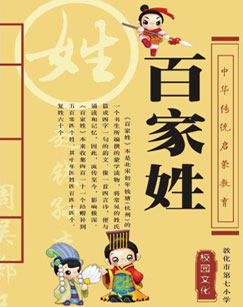
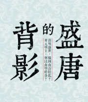
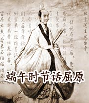
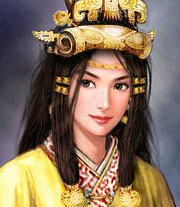
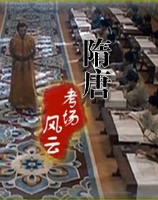
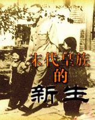
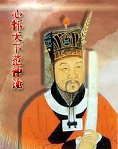
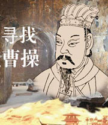

百家讲坛 大故宫_第三部
介绍：
《大故宫》第三部延续前两部内容，将视野集中于对明清最高权力斗争有巨大影响之皇室宗亲，及密切影响宫廷政治生活之宫女太监，详解其成败关键与命运走向，并透过对御药御膳之解析、国宝文物之品鉴，真实再现一个纵横捭阖、饮食男女、金帛珠玉里的宫廷世界...

百家讲坛 百家姓_第一部
介绍：
《百家姓》就是一部记录姓氏的童蒙读物。它只有568个字，包括504个姓氏。其中单姓444个，复姓60个。寻根问祖，追根溯源是人的天性，姓氏及其附着的文化内涵就是一张绝佳的名片，是打通古今交流通道的最好载体，它以一种血缘文化的特殊形式记录了中华民族的形成史...

百家讲坛 曹操的启示
介绍：
赵玉平教授将曹操这位历史人物的成功故事和管理学知识相结合，用管理学、心理学的方法揭示真理，发现规律，结合每个职场人在工作中可能遇到的问题，站在理论的高度帮大家换个角度看曹操，学习他的处世之道，从而达到古为今用的目的。

百家讲坛 名医是这样成名的
介绍：

百家讲坛 明太祖朱元璋
介绍：
在中国古代，一个一无所有的年轻人，要吃过怎样的苦、走过怎样的路、经历怎样的磨难、付出怎样的代价，才能最终创建一个帝国，为万世开太平?这样的人，几千年来，有且仅有一个，他就是明太祖朱元璋。朱元璋的个人经历是传奇的，更是励志的...

百家讲坛 盛唐的背影
介绍：
安史之乱不但让唐朝盛世戛然而止，甚至成为中国历史发展的分水岭。安史之乱对唐朝历史，乃至中国历史都影响重大。只有大唐才算得上真正的盛世，而一场孕育在盛世中的暴乱，使整个华北大地从高度繁华突然倒退了数百年，花团锦簇的繁华世界转眼之间成为悠远的追忆...
百家讲坛 成败论乾隆_上
介绍：
他是人类历史上，实际统治时间最长的一位帝王，六十三年零四个月。他是人类历史上，寿命最长的君主之一，享年八十九岁。他既仁慈又残忍、既和蔼又刻薄、既节俭又奢靡、既谦虚又自大。他是一个成功的皇帝，一生取得辉煌的统治成绩，将康乾盛世推向顶峰。他是一个失败的皇帝...

百家讲坛 端午时节话屈原
介绍：
说起屈原，人们首先会想到端午节。在大文豪苏轼眼中，他的文采与屈原相比“不能及屈子之万一”，而司马迁、陶渊明、李白、杜甫等文学大家也都对屈原评价极高，他甚至成了中国文人的象征，为什么屈原在大家的心目中会有如此崇高的地位呢...

百家讲坛 汉献帝
介绍：
从汉献帝刘协驾鹤西去的那一天起，他便被盖棺定论为历史兴衰交替的配角，几乎没有人愿意走进他复杂的内心世界。然而事实上，刘协并非亡国昏君

百家讲坛 千古一后
介绍：
北魏是中国历史上南北朝时期由鲜卑族建立的一个王朝，在中国历史的坐标中它位于三国和隋唐之间，是当时中国南北朝分裂对峙时期统一了中国北方的一个王朝。在北魏王朝的历史上有一个冯太后，在她临朝听政期间，因为文治显赫，史称文明太后，文明太后不仅政绩出众...
百家讲坛 三国名将_吴国篇
介绍：
三国，是一个永恒的话题，三国是典型的战争时代，群雄并起，你征我伐，是培养名将的肥沃土壤。从公元184年黄巾起义，到公元280年西晋统一，一共96年的时间里，众多的三国名将驰骋疆场，斗智斗勇，他们用自己的青春和热血，谱写了一曲又一曲的理想之歌...

百家讲坛 隋唐考场风云
介绍：
科举，它是影响无数中国古代文人的官吏选拔制度，它创始于隋，形成于唐，完备于宋，强化于明，至清朝趋向衰落。历经1300多年，对中国封建社会中后期的政治、经济、教育、文化和社会风尚有重大影响。它塑造了中国古代的文人品格，它也寄托了无数文人沉甸甸的梦想。

百家讲坛 末代皇族的新生
介绍：
一百年前的1912年，六岁的末代皇帝溥仪逊位，宣告了大清王朝的结束，同时也宣告了自秦始皇开始的已经统治中国二千多年的封建帝制的灭亡。按照清室优待条件，溥仪逊位后，仍然保留宣统帝号，继续居住紫禁城，国民政府每年给皇室拨付费用四百万两白银...
百家讲坛 女皇武则天(2007年有首播，跳转到2007年页面)
介绍：
这是一个大气磅礴的王朝，这是空前绝后的一代女皇。她颠覆了大唐，却又亲手缔造了大唐的强盛；她改写了天命，最终却又不得不向命运妥协。一千三百多年来，她是历史，也是传奇。武则天究竟是一个什么样的女人？她的成功之路从哪里起步...

百家讲坛 心怀天下范仲淹
介绍：
作为千古名人的范仲淹，官小胆不小，为了天下苍生，他不惧得罪权贵，甚至敢于直接批评皇帝和太后，还居然要让皇帝吃草，由此换来了人生的三起三落。那么，范仲淹究竟有着什么样的苦难身世？他的不要命读书法又是怎么回事？而他的人生“三光”又是一段怎样的故事和情怀呢？

百家讲坛 清代皇陵谜案
介绍：
1928年7月，令世人震惊的“东陵第一盗案”发生，乾隆帝裕陵地宫惨遭洗劫，乾隆帝及其合葬后妃被开棺扬尸。生前自称为十全老人的乾隆帝，最终却身首异处、尸骨不全。乾隆裕陵建造于清朝国力鼎盛时期，前后耗时九年多，精心筑造的地宫可谓固若金汤，盗墓贼究竟是如何闯入地宫的...

百家讲坛 王立群读宋史第二部_宋太宗_上
介绍：
宋太宗是大宋王朝的第二位皇帝，他身为宋太祖赵匡胤之弟，不合情理的继位使他在历史上留下了许多令人不解的疑团。他在位21年间，富国强兵，除了继承宋太祖文人政治，延续中国文治盛事，还积极扩张领土，使用政治压力迫使吴越王钱和割据漳、泉二州的陈洪进纳土归附...

百家讲坛 大明脊梁张居正
介绍：
张居正不仅是万历皇帝的老师，大明王朝的首辅大臣，还是历史上非同寻常的改革家。他曾经辅佐万历皇帝推行新政。从历史大局看，张居正的改革是成功而深远的。由于他的力挽狂澜，使原已垂危的大明王朝得以延续。

百家讲坛 寻找曹操
介绍：
我现在要问大家，你是健康人吗？身体没病不就是个健康人吗？到底什么样的人才算是个健康人？有些人虽然没病，但就是感觉不舒服，这又是怎么回事？北京中医药大学教授郝万山，从中医文化的角度为我们《说健康》。

百家讲坛 司马光_第一部
介绍：
一千年前，大宋王朝中期，思想激荡人物风流，涌现出了一大批名留青史的历史名人，司马光就是其中星光熠熠的一位，他童年时就留下了“司马光砸缸”的非凡故事，成了小孩子们的心中偶像。长大之后，司马光进士及第，仕途顺利，飞速成长为大宋政坛上的一颗耀眼明星...

百家讲坛 雍正和他的甄嬛们
介绍：
在《甄嬛传》中有很多情节也让我们感到了惊心动魄，后宫中的女人们之间的争风吃醋，争权夺利仿佛一天都没有停止过，可是看过以后我们不禁会有一个疑问，难道皇帝的后宫真的是像电视剧中表现的那样充满了尔虞我诈的宫廷斗争吗...

百家讲坛 话说聊斋_第一部
介绍：
在《聊斋志异》中，我们看到了一个鬼文化中的奇迹，这里的鬼怪带给我们的，不是恐惧，而是温暖与感动。书中那些花妖狐魅演绎的生死相从的绝美爱情，比人世间的真情，更温暖而可贵。书中那些鬼怪精灵，处处闪烁着人性的光辉，让我们在阅读中，时时领悟到人生的真谛。那么把鬼故事写得如此出神入化的人是谁呢...